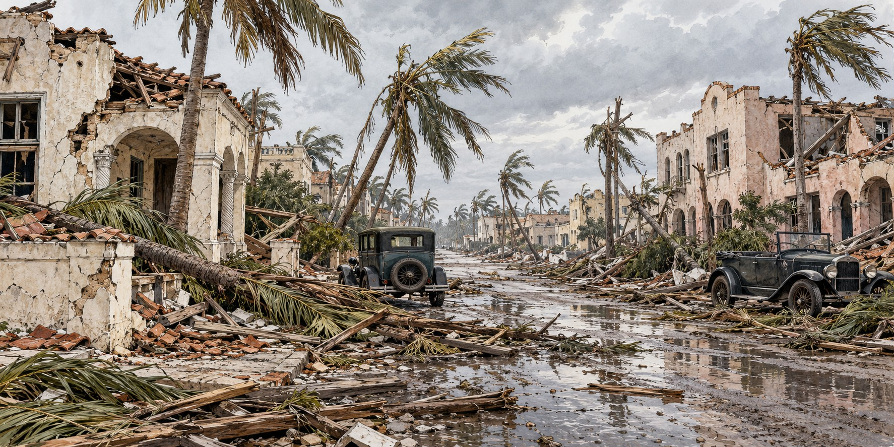

The Great Miami Hurricane of 1926
The Storm That Burst the Florida Land Boom

“Almost none of Miami Beach’s new residents had ever experienced a real hurricane.”
A 1921 advertisement for Miami Beach promised “practically no danger from summer storms.” The advertisement encouraged confidence that the approaching hurricane would prove tragically misplaced. By 1926 Miami’s population had passed 100,000, swollen by the Florida Land Boom, and almost none of the newcomers had seen a real hurricane. On September 18, 1926, the Great Miami Hurricane killed at least 372 people, left tens of thousands homeless, and is credited by historians with ending the land boom outright.
A Storm No One Saw Coming
The hurricane formed on September 11, 1926, about a thousand miles east of the Lesser Antilles, and battered the Turks and Caicos and the Bahamas with winds near 150 miles per hour. Yet the Weather Bureau’s early guidance told Floridians the storm would probably miss the state. Warnings of the real threat reached South Florida less than twelve hours before landfall, far too little time for a fast-growing, hurricane-inexperienced population to prepare.
Thirty-Five Minutes of Calm
The storm came ashore in the early hours of September 18 between Coral Gables and South Miami as a Category 4, with sustained winds estimated at 125 to 131 miles per hour. Its eye passed over downtown Miami, and a calm of roughly thirty-five minutes convinced many residents the storm was over. It was not. The winds returned from the opposite direction, recorded at 140 miles per hour in Fort Lauderdale, while a surge of more than ten feet swept across Miami Beach. More than 3,500 structures in Fort Lauderdale alone suffered major damage, and the city declared martial law.
A Death Toll the Country Argued Over
Early estimates put Miami’s dead above 1,000, and resorts became temporary morgues and hospitals. The official count was later revised to at least 372, with roughly 43,000 people homeless. The American Red Cross itself called the figures uncertain, noting that many “transients and colored migrants” were recorded as missing rather than dead. Recent scholarship finds nonwhite victims made up only about eleven percent of the official tally, though the Black share of the affected population is estimated at twelve to twenty-five percent.
Colored Town and the Unequal Aftermath
Miami’s segregated Black neighborhood, Colored Town (now Overtown), was among the hardest hit, and Black residents from as far away as Jacksonville came to help rebuild it. The Red Cross reported registering no “colored relief cases” in Miami Beach, and local authorities conscripted Black men and women into debris cleanup under threat of jail. The Chicago Defender warned of a “Miami Race War” by mid-October.
Moore Haven, Two Years Before the Bigger Flood
The storm crossed the Everglades and pushed Lake Okeechobee’s water against an inadequate earthen dike near Moore Haven, a town of about 600. The dike gave way, and a surge as high as fifteen feet destroyed the town and drowned an estimated 150 to 300 people. At least twenty-six, and by some estimates as many as fifty, unidentified victims were buried in a mass grave at Sebring’s Pinecrest Cemetery.
The Storm That Ended a Boom
Damage reached roughly $100 million in 1926 dollars. Northern headlines did the rest: the New York Times reported a thousand dead and towns “razed or flooded,” and a Philadelphia paper declared “Southeastern Florida Wiped Out.” Buyers who had purchased lots sight unseen began defaulting. The boom, already weakened that year by a sunken ship blocking Miami’s harbor and a Florida East Coast Railway embargo, did not survive the storm.
Why It Matters
The storm exposed a pattern Florida would repeat: rapid coastal development outpacing hurricane preparedness, and disaster relief that was never equally distributed.
Quick Facts
| Formed | September 11, 1926, about 1,000 miles east of the Lesser Antilles |
|---|---|
| Florida landfall | Early September 18, between Coral Gables and South Miami, Category 4 |
| Landfall winds | Category 4; historical wind estimates vary |
| The eye over Miami | About 35 minutes of calm, then winds from the opposite direction |
| Storm surge | More than 10 feet at Miami Beach; 10–15 feet at Moore Haven |
| Warning time | Less than 12 hours before landfall |
| Deaths | At least 372 officially; 150–300 at Moore Haven (counting varies) |
| Damage | About $100 million in 1926 dollars |
Did You Know?
The eye of the storm gave Miami about thirty-five minutes of eerie calm before the second half arrived.
Fort Lauderdale declared martial law after more than 3,500 structures were badly damaged.
Unidentified Moore Haven victims were buried in a mass grave at Sebring’s Pinecrest Cemetery.
Vocabulary
Eye: the calm center of a hurricane, surrounded by its strongest winds.
Storm surge: wind-driven seawater pushed onto land during a hurricane.
Land boom: a period of rapid, speculative real estate buying and selling.
Discussion Questions
1. Why did a population with no hurricane experience make the 1926 storm deadlier?
2. What does the aftermath in Colored Town reveal about how disaster relief was distributed?
Related Articles
FLH-0004 — The Okeechobee Hurricane of 1928
Sources
Journal of Policy History (Cambridge University Press). “Tempest in the Forbidden City: Racism, Violence, and Vulnerability in the 1926 Miami Hurricane.” cambridge.org
PBS American Experience. “The Hurricane of 1926.” pbs.org
National Weather Service, Miami. “Great Miami Hurricane of 1926.” weather.gov
Hurricane Science. “1926 — Great Miami Hurricane.” hurricanescience.org
University of Miami Libraries. “Overtown Chronology.” library.miami.edu
Gale Academic OneFile. “Disaster at Moore Haven.”
Coastal Breeze News. “1920s Hurricanes.” coastalbreezenews.com
Wikipedia. “1926 Miami Hurricane.”